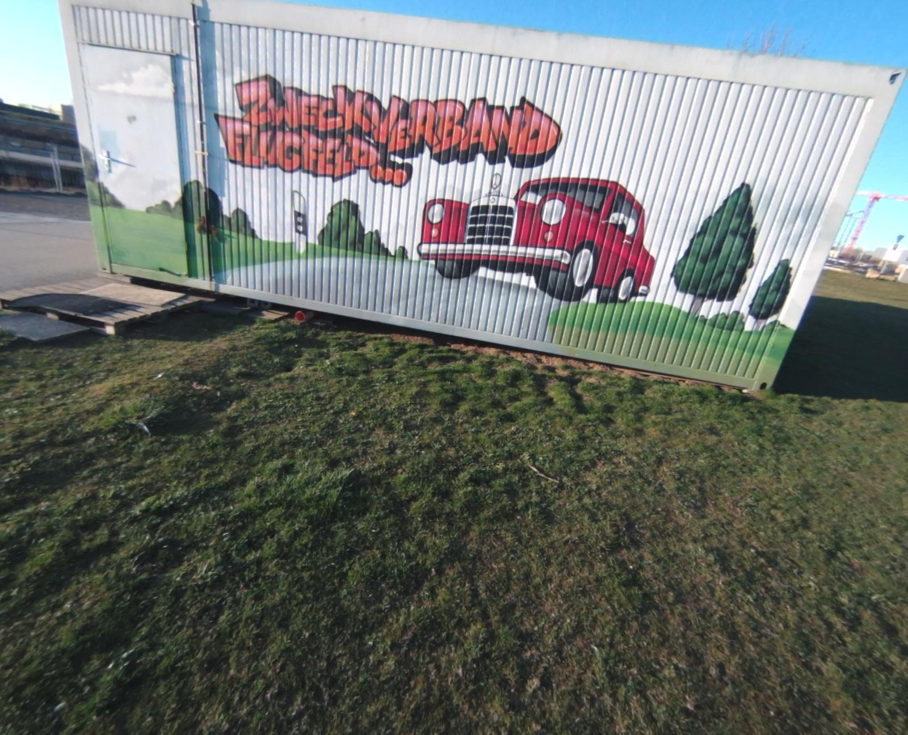
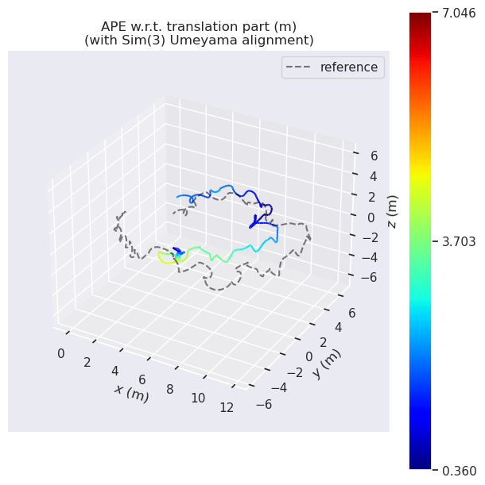
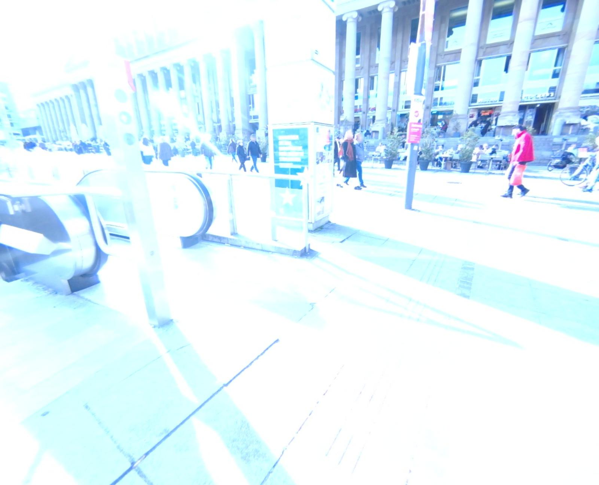
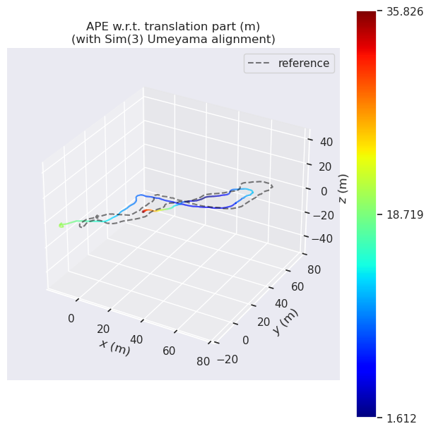

SVO-DT 재현 자체는 성공
공식 Oerlikon 입력과 공개 설정으로 전체 파이프라인을 399.8초 실행했다.
교수님 미팅에서 바로 열어보는 독립 기록 페이지. 실제 실행 결과, 실패 조건, 비교 가능 범위와 현재 정본만 모았다.
미팅 시작 직후 보여줄 핵심 판단만 남겼다.
공식 Oerlikon 입력과 공개 설정으로 전체 파이프라인을 399.8초 실행했다.
POST에서 world pose와 CAD registration이 모두 0. 실패 위치는 DT 정합 이전의 metric VIO다.
SVO-DT는 RGB뿐 아니라 IMU와 지속적인 global position을 요구한다. KIBO 결과는 cross-domain stress로만 기록한다.
PRE와 POST를 각 시작 anchor의 metric gauge에서 독립 재구성해 연결했다. 자동 online resume 주장은 아직 하지 않는다.
초기 변환 체인은 틀렸고, 공식 체인으로 다시 실행한 correction도 안전 gate가 7개 모두 거부했다.
GT-blind 동결 뒤 유효 4개를 평가해 회전 3승 1패, 평균 −0.82°. 한 실패를 미리 구별하지 못해 아직 채택하지 않는다.
“재현 실패”가 아니라 공식 환경 재현 성공으로 분류한다.
Global position은 시작 pose 한 번이 아니라 실행 중 계속 들어오는 절대 위치 측정이다. 공식 방법은 sensor depth를 사용하지 않는다.
| 출력 | 표본 | Position RMSE | Rotation RMSE | 용도 |
|---|---|---|---|---|
| World backend pose | 10,397 | 2.242 m | 4.531° | Primary |
| Registered pose | 226 | 1.455 m | 5.916° | Registration output |
| Released evaluator · posyaw | 10,397 | 1.861 m | 3.736° | Post-hoc diagnostic |
d64132270dd448d471a964b63035fdb995eed927, ROS Noetic 격리 Docker, 공개 launch/calibration/frontend/backend/ICP 설정을 그대로 사용했다. 공식 repository working tree는 수정하지 않았다.haz_cam_depth_to_image_transform 누락이 확인됐다. 해당 악화 수치는 PicoFlex 성능 근거로 사용하지 않는다. 수정된 재실행과 채택 판단은 PicoFlex–CAD ICP 감사에 분리했다.같은 KIBO 가림 입력에서 어디까지 진행됐고, 정확히 어디서 끊겼는지 기록한다.
/hw/imu messages, Bumble camera–IMU extrinsic, zero initial biases, start-only full pose, no PicoFlex. World output은 POST 시작 8.86초 전에 끝났고 실제 CAD registration은 PRE 1회뿐이었다.Depth 센서와 정합 구현을 분리해 검사했다. 초기 악화 수치는 유효한 센서 평가가 아니다.
| 검사 | 판정 | 측정 결과 | 영향 |
|---|---|---|---|
| 원본 point cloud | 정상 | 원본 bag과 array-equal | 잘못된 파일·parser 아님 |
| RGB–depth 시간 | 거친 nearest | f200 62.9 ms · 전체 |잔차| median 34.5 ms | f200 약 5.3 mm / 0.36° motion |
| Haz–Nav extrinsic | config의 Nav→Haz를 Haz→Nav로 사용 | inverse 필요 | |
| Depth affine | haz_cam_depth_to_image_transform 미적용 | raw depth 좌표계가 image camera와 불일치 |
| 수정 후 후보 | Position W/L | Rotation W/L | 평균 Δ position | 평균 Δ rotation | Gate 승인 |
|---|---|---|---|---|---|
| Single · rotation ≤0.5° | 2 / 5 | 2 / 5 | +0.10 mm | +0.106° | 0 / 7 |
| Single · translation ≤2 cm | 2 / 5 | — | +5.92 mm | — | 0 / 7 |
| Single · full ≤2 cm / 0.5° | 3 / 4 | 3 / 4 | +2.47 mm | +0.147° | 0 / 7 |
| Single · full ≤5 cm / 1° | 2 / 5 | 2 / 5 | +5.38 mm | +0.409° | 0 / 7 |
| Multi-3 · rotation ≤0.5° | 2 / 5 | 3 / 4 | +0.14 mm | +0.099° | 0 / 7 |
| Multi-3 · translation ≤2 cm | 2 / 5 | — | +6.30 mm | — | 0 / 7 |
| Multi-3 · full ≤2 cm / 0.5° | 2 / 5 | 3 / 4 | +3.04 mm | +0.117° | 0 / 7 |
| 동결된 partial factor | Gate | 통과분 W / L | 통과분 평균 변화 | 판정 |
|---|---|---|---|---|
| Plane normal only | 4 / 7 | Rotation 3 / 1 | −0.820° | 조건부 후보 |
| Signed distance only | 4 / 7 | Position 1 / 3 | +4.89 mm | 폐기 |
| Normal + distance | 4 / 7 | R 3 / 1 · t 1 / 3 | −0.820° · +5.48 mm | 폐기 |
| Frame | Frozen gate | Seed R | Result R | Δ rotation | Outcome |
|---|---|---|---|---|---|
| f200 | Accept | 2.826° | 2.207° | −0.619° | Win |
| f376 | Reject | 2.371° | 2.371° | 0.000° | Tie |
| f470 | Reject | 4.925° | 4.925° | 0.000° | Tie |
| f564 | Accept | 5.864° | 2.612° | −3.252° | Win |
| f658 | Accept | 1.202° | 1.848° | +0.646° | |
| f752 | Accept | 2.687° | 2.632° | −0.055° | Win |
| f846 | Reject | 1.342° | 1.342° | 0.000° | Tie |
| Depth 사용법 | 실제로 주는 정보 | 현재 판단 |
|---|---|---|
| Raw cloud → full CAD 6DoF ICP | 퇴화 방향까지 강제로 update | |
| Rendered depth → projective factor | CAD z-buffer와 같은 pixel의 관측 가능한 Hessian 방향 | P0 · 다음 실험 |
| 3–10 frame finite plane track → fixed CAD plane | Plane normal의 tilt만 사용; 거리 update는 제외 | 실험 · 조건부 |
| Motion-compensated TSDF/local map | Depth denoising·hole 보완; 독립 global pose는 아님 | P2 · 필요할 때 |
PPT의 긴 백업 제목을 압축했다. 기존 보고를 인용만 한 것이 아니라 해당 데이터에서 HI-SLAM2를 직접 실행한 결과다.




Archived baseline evidence · 위 ATE 그래프는 evo + Sim(3) Umeyama 정렬 결과이므로 DART의 direct-absolute 수치와 같은 표에 섞지 않는다. 원인 설명은 궤적·렌더·프레임에서 역추적한 강한 정황이며 내부 feature/BA/depth 계측으로 단일 원인을 확정한 실험은 아니다.
DART-SLAM을 만든 세 연구 흐름과, 실제 평가에서 각 방법이 맡는 역할을 분리한다.
HI-SLAM2 · VGGT-SLAM2 · MASt3R-SLAM
Retrieval · matching · pose estimation · HLoc · MeshLoc
SVO-DT · diS-Graphs · ivS-Graphs · BIM-vSLAM
단안 SLAM 백본에 metric twin 대상 render-to-real 위치추정과 검증된 구조 제약을 결합한다.
Monocular RGB + metric 3D twin
Tracking-loss 후 metric map 재연결RGB + IMU + ongoing global position + metric twin
Metric VIO에 DT registration factor 융합3D LiDAR + robot odometry + semantic A-Graph
건축 도면의 벽·방 편차까지 공동 추정| 방법 | 출력 | 이 프로젝트에서의 역할 | 같은 headline 표? |
|---|---|---|---|
| HI-SLAM2 · VGGT-SLAM2 · MASt3R-SLAM · WildGS-SLAM | SLAM trajectory/map | Direct baseline | Yes |
| HLoc · MeshLoc | 독립 query pose | Separate localization table | No |
| SVO-DT | Visual-inertial world trajectory | Native repro + KIBO stress | No |
| diS-Graphs | LiDAR SLAM + plan deviation | No |
| 연구 | 입력·prior | DART와의 관계 |
|---|---|---|
| SVO-DT · 2025 | Mono RGB + IMU + metric 3D twin | 가장 가까운 visual-inertial 선행 |
| diS-Graphs · 2025 | 3D LiDAR + odometry + architectural plan | 부정확한 twin 구조까지 공동 추정 |
| LIO-BIM · 2025 | 3D LiDAR + IMU + BIM | scan–BIM factor를 쓰는 공개 LiDAR 계열 |
| ivS-Graphs · 2026 | RGB-D + BIM walls | BIM wall 제약을 visual SLAM backend에 융합 |
| BIM-vSLAM · 2026 | Monocular RGB + BIM semantic planes | 최신·가까운 단안 BIM-SLAM 계열 |
| BIM-assisted 360 SLAM · 2026 | 360° RGB + limited BIM reference points | BIM 좌표계에서 reference-point BA |
| BIM-Loc · 2026 | 3D LiDAR + IMU + BIM | 현실–BIM discrepancy를 함께 추정하는 최신 LiDAR 계열 |
| BIM-SLAM · 2023 | 3D LiDAR + BIM | multi-session anchoring 계열 |
PRE와 POST를 각 시작 anchor의 metric gauge에서 독립적으로 재구성한 최종 connected display map.
| 구간 | Map | PSNR ↑ | SSIM ↑ | LPIPS ↓ |
|---|---|---|---|---|
| PRE · 13 views | DART-SLAM | 21.994 | 0.72465 | 0.14621 |
| PRE · 13 views | Clean HI-SLAM2 | 19.397 | 0.71833 | 0.35588 |
| POST · 148 views | DART-SLAM | 26.356 | 0.8448 | 0.1331 |
| POST · 148 views | Clean HI-SLAM2 | 24.398 | 0.8294 | 0.1709 |
다음 실험과 미팅에서 바로 판단할 순서.
현재 독립 causal segment 결과를 하나의 연속 실행으로 통합.
같은 프로토콜로 모든 SLAM baseline과 영상·경로·표를 잠근다.
움직이는 우주인 영역을 uncertainty-weighted tracking/mapping으로 억제.
global transform과 anchor 잔차를 함께 줄여 0.1 m / 2° 목표를 안정화.
현재 기록으로 충분. reviewer가 요구할 때만 zero-g IMU adaptation을 추가한다.
페이지 요약보다 아래 로컬 artifact가 우선한다. 경로 버튼은 미팅 후 작업을 바로 재개하기 위한 것.
~/exp1/baselines/svodt_d641322/REPORT.md~/exp1/baselines/svodt_d641322/REPRODUCE.md~/exp1/baselines/svodt_d641322/runs/oerlikon_official_full_v1/direct_metrics.json~/exp1/baselines/svodt_d641322/runs/kibo_official_stress_v1/run_v3_final/direct_post_metrics.json~/exp1/data_v2/recon_work/kibo_picoflex_icp_ablation_v2_final/SUMMARY.md~/exp1/data_v2/recon_work/kibo_picoflex_icp_ablation_v2_final/report.json~/exp1/data_v2/recon_work/kibo_picoflex_icp_ablation_v2_final/anchor_variant_table.csv~/exp1/data_v2/recon_work/kibo_picoflex_dominant_plane_partial_dof_v1/full_f200_f846/FINAL_REPORT.md~/exp1/data_v2/recon_work/kibo_picoflex_dominant_plane_partial_dof_v1/full_f200_f846/geometry_gate_summary.csv~/exp1/data_v2/recon_work/kibo_bag2_connected_anchor_gauge_v1/connected_map_report_v1.json~/exp1/pitch_cad_anchor.pptx · slide 8~/exp1/.pitch_backup_latest.pptx · slide 8 exact backup